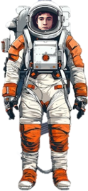
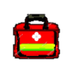
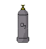
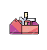
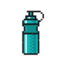

INVENTARIO DE RECURSOS
El oxígeno es un elemento vital para cualquier misión espacial, ya que garantiza la supervivencia de los astronautas y el funcionamiento de diversas tecnologías.
Botiquines especiales son miniclinicas en órbita, adaptados a la gravedad cero, curan en el espacio, son esenciales para la salud de los astronautas
Los kits de herramientas espaciales son como los de cualquier taller, pero adaptados al entorno espacial.
Una botella de agua en el espacio no solo es un objeto para beber. Es una herramienta esencial para la supervivencia, la investigación y el mantenimiento de la vida a bordo de las naves espaciales.